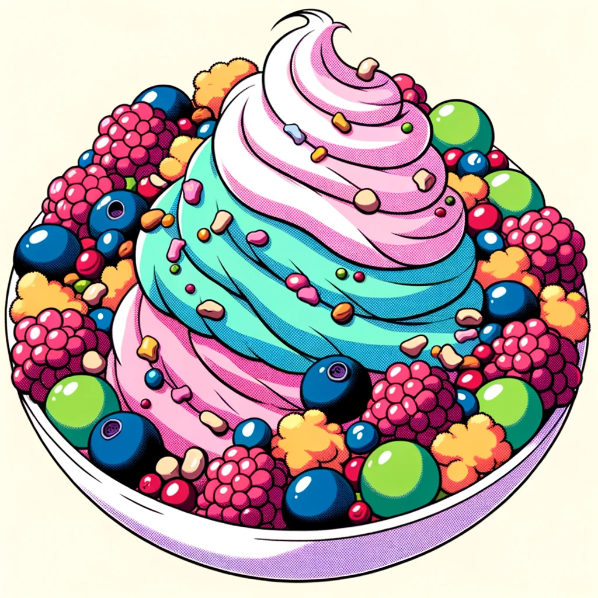

Chopper's Cotton Candy Salad

Description
Chopper's favorite. Here's what you need to make it.
Ingredients:
- 2 cups of spun cotton candy (various flavors)
- 1 cup of mixed berries (strawberries, blueberries, raspberries)
- 1/2 cup of nuts (almonds or walnuts)
- A drizzle of honey or maple syrup
Steps:
- In a large bowl, gently mix the cotton candy and mixed berries.
- Top with nuts.
- Just before serving, drizzle with honey or maple syrup for added sweetness.